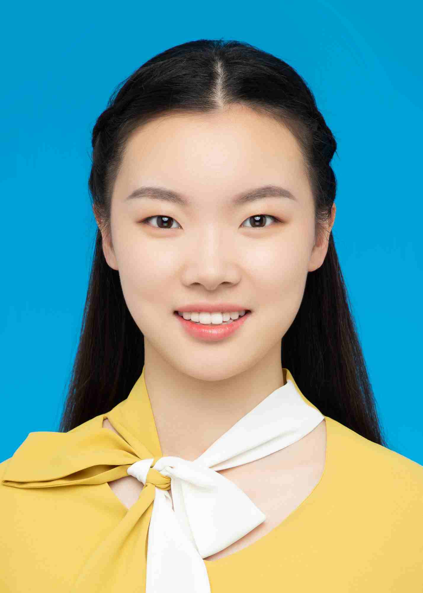

|  | Fangzhou Liu (刘方舟)
Ph.D. Candidate
|
Biography
I am currently a third-year Ph.D. candidate at the Department of Computer Science and Engineering, The Chinese University of Hong Kong (CUHK), under the supervision of Prof. Bei Yu and Prof. Farzan Farnia since Fall 2023. Previously, I received my B.E. in the School of Electronic Science and Engineering from Nanjing Univeristy (NJU) in 2023.
Research Interest
Machine Learning in EDA
Logic Synthesis Optimization
Publications
Conference papers
[C11] Ziyi Wang, Fangzhou Liu, Tsung-Yi Ho, David Z. Pan, Bei Yu, “NUA-Timer: Pre-Synthesis Timing Prediction Under Non-Uniform Input Arrival Times”, IEEE/ACM International Conference on Computer-Aided Design (ICCAD), Munich, Oct. 26–30, 2025. (paper)(slides)
[C10] Leilei Jin, Rongliang Fu, Zhen Zhuang, Liang Xiao, Fangzhou Liu, Bei Yu, Tsung-Yi Ho, “ChronoTE: Crosstalk-Aware Timing Estimation for Routing Optimization via Edge-Enhanced GNNs”, IEEE/ACM International Conference on Computer-Aided Design (ICCAD), Munich, Oct. 26–30, 2025.(paper)
[C9] Yuan Pu, Fangzhou Liu, Zhuolun He, Keren Zhu, Rongliang Fu, Ziyi Wang, Tsung-Yi Ho, Bei Yu, “HeLO: A Heterogeneous Logic Optimization Framework by Hierarchical Clustering and Graph Learning”, ACM International Symposium on Physical Design (ISPD), Austin, Mar. 16–19, 2025. (paper)(slides)
[C8] Fangzhou Liu, Guannan Guo, Yuyang Ye, Ziyi Wang, Wenjie Fu, Weihua Sheng, Bei Yu, “GraphCAD: Leveraging Graph Neural Networks for Accuracy Prediction Handling Crosstalk-affected Delays”, ACM International Symposium on Physical Design (ISPD), Austin, USA, Mar. 16–19, 2025. (paper)(slides)
[C7] Xinyun Zhang, Binwu Zhu, Fangzhou Liu, Ziyi Wang, Peng Xu, Hong Xu, Bei Yu, “Disentangle, Align and Generalize: Learning A Timing Predictor from Different Technology Nodes”, ACM/IEEE Design Automation Conference (DAC), San Francisco, Jun. 23–27, 2024. (paper)(slides)(poster)
[C6] Yuan Pu, Fangzhou Liu, Yu Zhang, Zhuolun He, Kai-Yuan Chao, Yibo Lin, Bei Yu, “Lesyn: Placement-aware Logic Resynthesis for Non-Integer Multiple-Cell-Height Designs”, ACM/IEEE Design Automation Conference (DAC), San Francisco, Jun. 23–27, 2024. (paper)(slides)
[C5] Fangzhou Liu, Zehua Pei, Ziyang Yu, Haisheng Zheng, Zhuolun He, Tinghuan Chen, Bei Yu, “CBTune: Contextual Bandit Tuning for Logic Synthesis”, IEEE/ACM Proceedings Design, Automation and Test in Europe (DATE), Valencia, Spain, Mar. 25–27, 2024. (paper)(slides)(poster)
[C4] Yu Zhang, Yuan Pu, Fangzhou Liu, Peiyu Liao, Kai-Yuan Chao, Keren Zhu, Yibo Lin, Bei Yu, “Multi-Electrostatics Based Placement for Non-Integer Multiple-Height Cells”, ACM International Symposium on Physical Design (ISPD), Taipei, Mar. 12–15, 2024. (paper)(slides)
[C3] Haisheng Zheng, Zhuolun He, Fangzhou Liu, Zehua Pei, Bei Yu, “LSTP: A Logic Synthesis Timing Predictor”, IEEE/ACM Asian and South Pacific Design Automation Conference (ASPDAC), South Korea, Jan. 22–25, 2024. (paper)(slides)
[C2] Zehua Pei, Fangzhou Liu, Zhuolun He, Guojin Chen, Haisheng Zheng, Keren Zhu, Bei Yu, “AlphaSyn: Logic Synthesis Optimization with Efficient Monte Carlo Tree Search”, IEEE/ACM International Conference on Computer-Aided Design (ICCAD), San Francisco, Oct. 29–Nov. 02, 2023. (paper)(slides)(poster)
[C1] Siting Liu, Ziyi Wang, Fangzhou Liu, Yibo Lin, Bei Yu, Martin Wong, “Concurrent Sign-off Timing Optimization via Deep Steiner Points Refinement”, ACM/IEEE Design Automation Conference (DAC), San Francisco, Jul. 09–13, 2023. (paper)(slides)(poster)
Journal Papers
[J4] Jiahao Xu, Yuan Pu, Yu Zhang, Fangzhou Liu, Wenjian Yu, Kai-Yuan Chao, Bei Yu, “Easyn: Resynthesis and Legalization Joint NIMCH Design Placement”, accepted by IEEE Transactions on Computer-Aided Design of Integrated Circuits and Systems (TCAD).
[J3] Fangzhou Liu, Wuqian Tang, Zehua Pei, Ziyang Yu, Haisheng Zheng, Zhuolun He, Mengjia Dai, Tinghuan Chen, Bei Yu, “CB-EVO: Contextual Bandit Tuning with Evolutionary Search for Logic Synthesis”, accepted by ACM Transactions on Design Automation of Electronic Systems (TODAES).
[J2] Xinyun Zhang, Binwu Zhu, Fangzhou Liu, Jiaxi Jiang, Ziyi Wang, Peng Xu, Hong Xu, Bei Yu, “Pre-Routing Timing Prediction Across Different Technology Nodes”, IEEE Transactions on Computer-Aided Design of Integrated Circuits and Systems (TCAD), vol. 44, no. 07, pp. 2697–2710, 2025. (paper)
[J1] Siting Liu, Ziyi Wang, Fangzhou Liu, Yibo Lin, Bei Yu, Martin D.F. Wong, “Sign-off Timing Considerations via Concurrent Routing Topology Optimization”, IEEE Transactions on Computer-Aided Design of Integrated Circuits and Systems (TCAD), vol. 44, no. 05, pp. 1942–1953, 2025. (paper)
Education
Ph.D. Computer Science and Engineering, The Chinese University of Hong Kong, Aug 2023 - present
B.Eng. VLSI Design & System Integration, School of Electronic Science and Engineering, Nanjing Univeristy, Sep 2019 - June 2023
Experience
Research Intern, Huawei Hong Kong Research Center, Feb 2024 - Sep 2024
Research Intern, Shanghai Artificial Intelligence Laboratory, Sep 2022 - Jun 2023
Teaching
CENG3420, 2025-R2, Computer Organization & Design
CENG3420, 2024-R2, Computer Organization & Design
CSCI1510, 2023-R2, Computer Principles and C Programming
CENG2010, 2023-R1, Digital Logic Design Laboratory
Awards
1st Place Award, Problem C, ICCAD contest, 2025
2nd Place Award, Problem A, ICCAD contest, 2024
Xiakedao EDA2 Challenge Second Prize Winner, ODC computation for clock gating, 2024
“KIRIN Cup” and First Place Award, Integrated Circuit EDA Elite Challenge, 2023
Postgraduate Scholarship, CUHK, 2023-2027